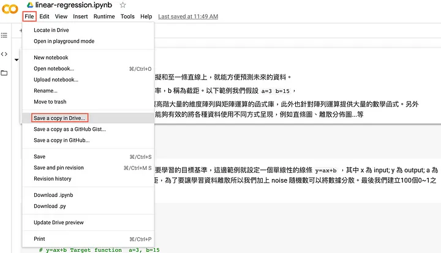
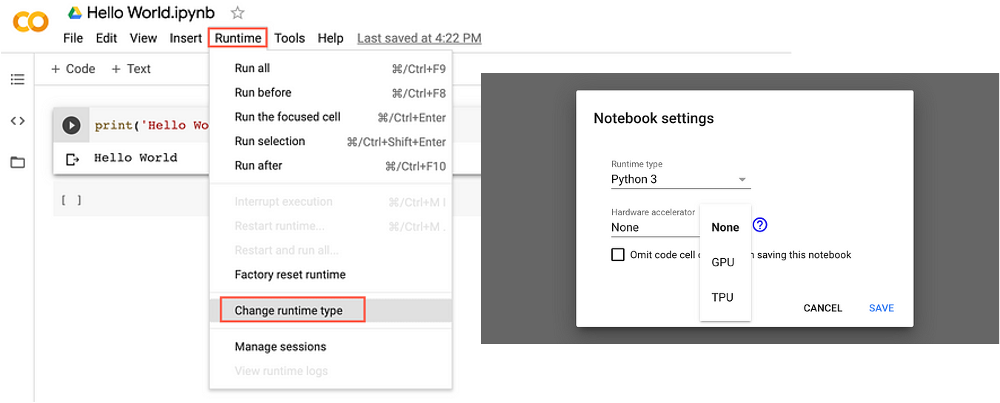
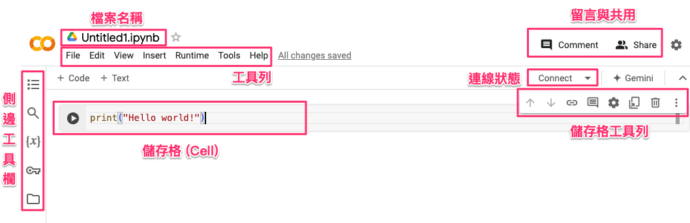
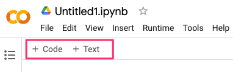
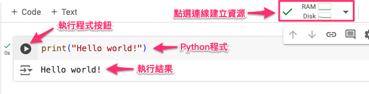
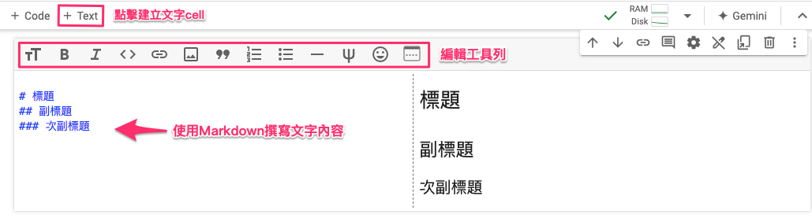
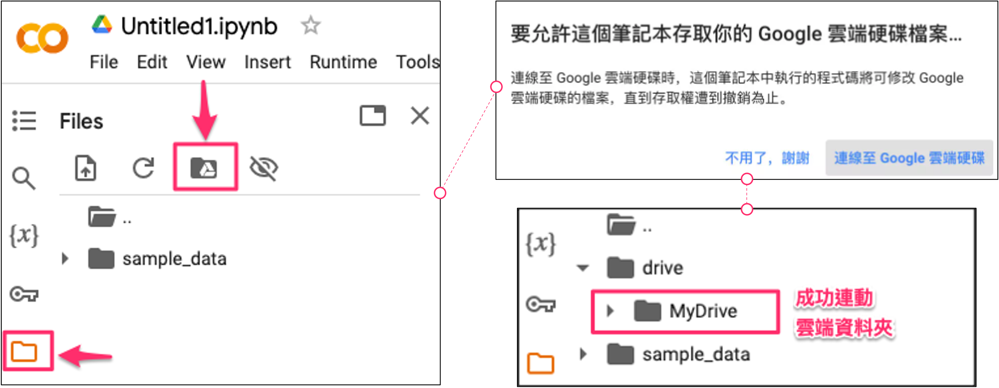

1.2 Google Colab：適合 Python 初學者的雲端開發環境
隨著 Python 成為機器學習、數據分析和人工智慧領域的主要編程語言，如何快速上手並開始開發成為許多初學者關注的問題。對於那些不想在本地設置開發環境的人來說，Google Colaboratory（簡稱 Colab）是一個非常理想的解決方案。因此，如果你是完全的初學者，建議一開始先不要急著在本地端架設環境，而是利用免費的雲端資源。這樣可以讓你專注於學習 Python，而不必為環境設定而煩惱。
什麼是 Google Colaboratory？
Google Colaboratory 是一個免費的雲端編程環境，它基於 Jupyter Notebook，讓用戶可以在線編寫和執行 Python 程式，無需本地設置 Python 環境。Colab 提供強大的計算資源，包括免費的 GPU 和 TPU 支持，非常適合用來進行機器學習模型訓練、數據分析以及其他高計算需求的工作。
為什麼 Colab 適合初學者？
-
免安裝：
- Colab 是基於雲端的，這意味著你不需要安裝任何軟體或進行任何複雜的配置。只要有網頁瀏覽器和 Google 帳戶，就能隨時隨地開始編寫程式。
-
簡單易用的界面：
- Colab 界面直觀，基於 Jupyter Notebook 的形式非常適合初學者。你可以將程式碼分段編寫、執行，並即時看到結果。同時還支持文字、圖片、數據表格的展示，便於編寫教學筆記或說明文件。
-
即時執行結果：
- 你可以在 Notebook 中分段執行程式碼，看到即時結果，這對於學習和理解 Python 語法和機器學習概念非常有幫助。即使程式碼出錯，你也可以只修改那一小段，再次執行即可，無需重新運行整個程式。
-
支援 GPU/TPU：
- 對於需要大量計算資源的任務，如訓練深度學習模型，Colab 提供免費的 GPU 和 TPU 資源，這對於本地無法提供足夠計算能力的初學者來說，是非常實用的功能。
-
與 Google 雲端硬碟整合：
- Colab 與 Google 雲端硬碟無縫整合，你可以方便地存儲和管理 Notebook，隨時從雲端打開、修改、分享你的專案。
Colab 的常見應用場景
-
Python 語法學習：
- 初學者可以利用 Colab 實時學習和執行 Python 語法，從簡單的數據結構、條件語句、迴圈到函數，逐步掌握編程技能。
-
資料分析與視覺化：
- Colab 支持多種 Python 數據分析庫，如 Pandas、NumPy、Matplotlib 等。你可以使用 Colab 進行數據清理、處理和可視化，並即時查看分析結果。
-
機器學習與深度學習實驗：
- 對於那些想進行機器學習或深度學習的初學者，Colab 提供了 TensorFlow、Keras 等框架的支持。你可以利用其強大的 GPU 資源，進行模型訓練和測試，而不需要昂貴的硬體設備。
-
教學與展示：
- Colab 支持在 Notebook 中嵌入文字說明、圖片和程式碼，非常適合用來撰寫教學筆記或進行實作演示。
如何開始使用 Colab？
首先開啟 Chrome 瀏覽器(推薦)，接著登錄你的 Google 帳戶。這裡提供一個範例程式，大家可以依照以下步驟操作，並將副本保存到自己的雲端硬碟中。這樣你就可以自由地修改程式，並保存你的程式碼。

將範例程式副本到自己的雲端硬碟後，程式碼將會自動保存到你的雲端硬碟中的 Colab Notebooks 資料夾底下，如圖片所示。你可以隨時在這個資料夾內找到你的專案，並進行修改和運行。
在 Google Colaboratory 中，預設的運算資源是使用 CPU。如果你的專案需要更高的計算能力，例如訓練深度學習模型，可能會需要使用到 GPU 或 TPU。首先，點選頂部選單中的 Runtime（執行階段）。 接著，選擇 Change runtime type（更改執行階段類型）。 在彈出的設定視窗中，你可以將 Hardware accelerator（硬體加速器） 設定為 GPU 或 TPU。 設定完成後，點擊 Save（保存），這樣就可以開始使用 GPU 或 TPU 進行計算。

Note
在 Google Colaboratory 中，GPU 和 TPU 運算資源是免費提供的，但有一定的使用限制和配額。
免費使用 GPU 和 TPU 的配額
-
GPU：
- Colab 提供 Tesla K80、T4 等類型的 GPU 供用戶使用。
- 免費用戶每天的使用時間限制約為 12 小時（具體使用時間會隨著系統負載情況調整）。
- 連續使用 GPU 超過一定時間後，可能需要間隔一段時間再繼續使用。
-
TPU：
- TPU 主要用於加速深度學習模型訓練，如使用 TensorFlow 和 Keras。
- 免費用戶同樣享有一定時間的 TPU 使用配額，通常與 GPU 類似，每天有數小時的限制。
注意事項
- Colab 的免費資源是根據用戶的需求動態分配的，因此如果某些時間點系統資源吃緊，使用時間可能會縮短。
- 如果需要更多的計算資源或穩定的 GPU/TPU 使用時間，可以考慮升級到 Colab Pro 或 Colab Pro+，這會提供更長的運算時間、更快的 GPU/TPU 以及更大的 RAM 容量。
Colab Notebook環境介紹
Google Colab 是一個非常方便且易於上手的開發環境，特別適合初學者進行 Python 開發。想要建立一個新的空白專案時，只需在 Google Colab 點擊「新建筆記本」即可創建一個新的 Jupyter Notebook，開始你的 Python 開發。不需要安裝任何軟體，只要有瀏覽器和網路連線，就能輕鬆使用。
當你進入 Colab 介面後，你會看到以下幾個主要的操作區域：
- 檔案名稱：顯示目前開啟的檔案名稱。
- 工具列：包含各種功能選項，如檔案、編輯、檢視、執行等。
- 側邊工具欄：提供快速存取功能，如檔案管理和程式碼片段。
- 儲存格 (Cell)：顯示並執行程式碼的區域。
- 儲存格工具列：儲存格專屬的操作按鈕，如執行、移動、設定等功能。
- 連線狀態：顯示目前的連線狀態。
- 留言與共用：提供留言與共用功能的選項。

Note
開啟 Notebook 後，第一個步驟是點擊連線(Connect)以配置專案所需的運算資源。
基本元素
在 Google Colaboratory（Colab）中，cell 是 Jupyter Notebook 的基本單位，每個 cell 都可以包含程式碼或文字。Colab 的 Notebook 主要由兩大元素組成：Code（程式碼）cell 和 Text（文字）cell。

Code（程式碼）cell：
Code cell 用來編寫和執行 Python 程式碼。當你在這個 cell 中輸入程式碼並運行後，Colab 會即時執行該程式，並在下方顯示運行結果。這讓你能夠即時測試程式碼，方便進行開發和學習。

Note
可以直接在程式區塊中輸入 Python 程式碼，並按下 Shift + Enter 鍵執行程式，又或是點選每個cell左側執行按鈕，執行並即時查看運行結果。
Text（文字）cell：
Text cell 用來撰寫說明、描述或標註，支援使用 Markdown 語法進行排版。這讓你能夠在 Notebook 中清晰地記錄程式邏輯、步驟或教學內容，讓程式和說明可以融合在一起，便於教學和共享。

連動 Google Drive
由於 Colab 是 Google 的服務，因此它能夠方便地與 Google 雲端硬碟整合，讓你可以輕鬆地在 Colab 中新增、刪除或修改檔案。只需簡單幾步，即可將 Colab 與 Google Drive 連動：
-
掛接雲端硬碟：點擊 Colab 左側的按鈕，選擇連動 Google 雲端硬碟，這樣就可以開始進行檔案的存取。
-
開啟權限：點擊按鈕後，會彈出一個要求授權的視窗，點選「連線至 Google 雲端硬碟」，允許 Colab 存取你的雲端硬碟資料。
-
確認掛接成功：在左側清單中看到 Google 雲端硬碟的資料夾後，表示 Colab 已經成功連接，現在可以開始在 Notebook 中操作雲端硬碟的檔案。
-
測試連動：你可以將以下程式碼貼入 Colab，執行後會在雲端硬碟的 Colab Notebooks 資料夾中創建一個名為 test.txt 的文件，內容是「Hello Google Drive!」：

小結
Google Colaboratory 是一個適合 Python 初學者的理想工具，無需配置本地開發環境，簡單易用且具備強大的雲端計算資源。無論是學習 Python 基礎、進行數據分析，還是深入探索機器學習領域，Colab 都能滿足你的需求。最重要的是，它完全免費，讓每個人都能輕鬆入門 Python 編程與 AI 開發。